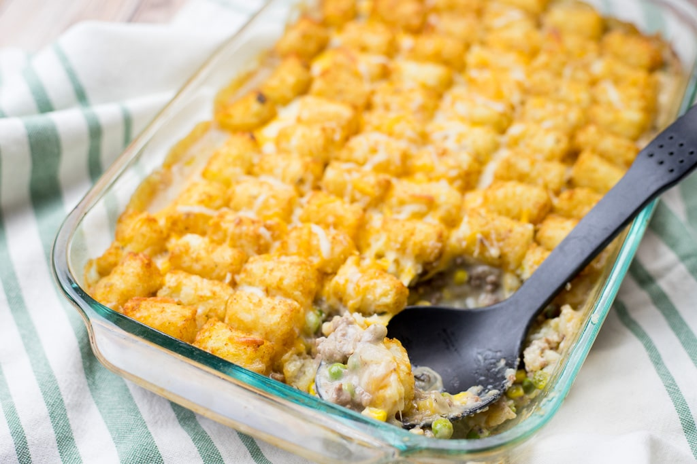

Tater-tot Hotdish

Description
Crispy potato tater-tots over a soupy collection of beef, corn, green beans and other miscellaneous vegetables. Tater-tot hotdish is a quinessential Midwestern hotdish, and makes a great breakfast, supper, or leftover meal.
Recipe taken from foodnet.com.
Ingredients
- 1/4 cup extra-virgin olive oil
- 1 medium yellow onion, finely chopped (about 2 cups)
- 1 pound 80% lean ground beef
- Kosher salt and freshly ground black pepper
- 2 cups frozen cut green beans, thawed (8 ounces)
- 1 3/4 cups frozen corn kernels, thawed (8 ounces)
- Two 10-ounce cans condensed cream of mushroom soup
- 1 pound frozen potato tots
Instructions